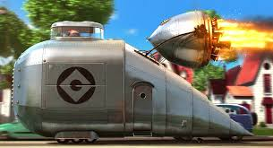
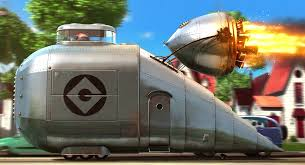

Kendaraan Unik Minions
Minions sering menggunakan kendaraan-kendaraan unik dan aneh ciptaan Gru untuk melakukan petualangan dan misi mereka.
Minions sering menggunakan kendaraan-kendaraan unik dan aneh ciptaan Gru untuk melakukan petualangan dan misi mereka.
